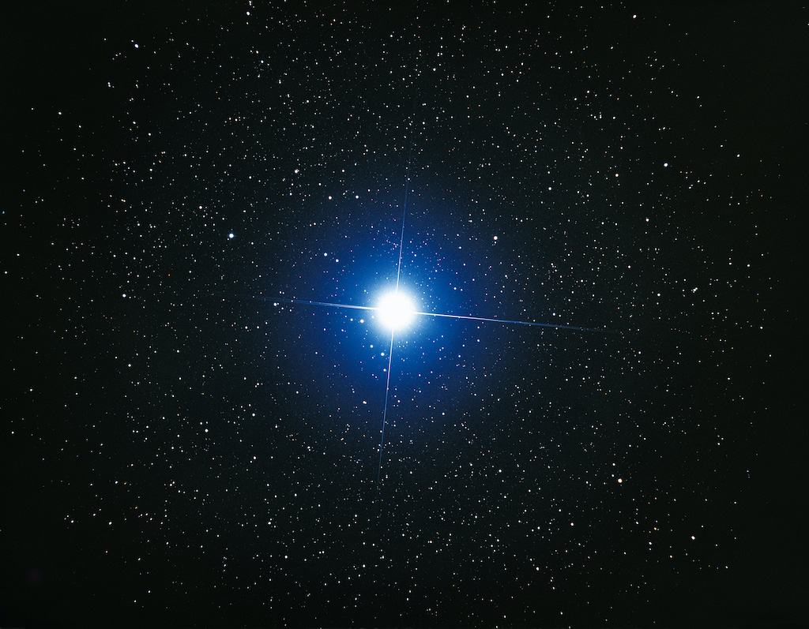
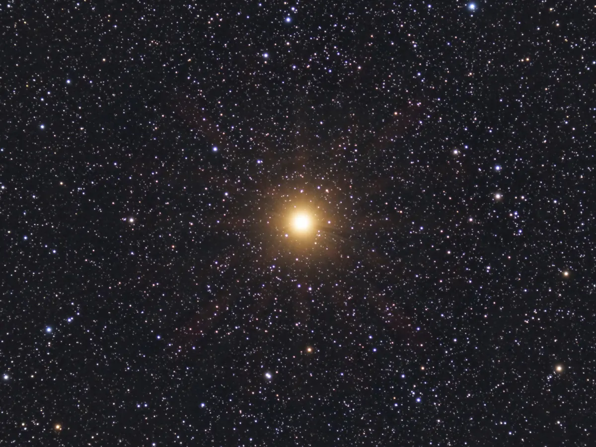

Notable Stars in Our Universe
Stars are luminous spheres of plasma held together by gravity. They come in various sizes, temperatures, and luminosities. Each star has its unique characteristics and life cycle.
Sun
The Sun is the star at the center of our solar system. It provides the necessary heat and light for life on Earth. It's a G-type main-sequence star (G2V) and is about 4.6 billion years old.

Sirius
Sirius, also known as the Dog Star, is the brightest star in the night sky. It's located in the constellation Canis Major. Sirius is actually a binary star system, consisting of a main-sequence star (Sirius A) and a white dwarf (Sirius B).
Betelgeuse
Betelgeuse is a red supergiant star located in the constellation Orion. It's one of the largest and most luminous stars visible to the naked eye. Betelgeuse is nearing the end of its life and is expected to explode as a supernova within the next million years.
